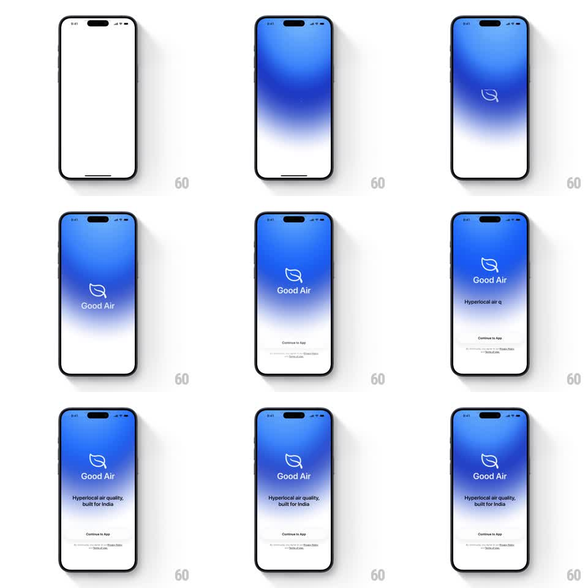

Media
Frame-by-frame

Rebuild this animation 1:1: Good Air's splash - a blue gradient washes down a white screen, the leaf logo draws itself, "Good Air" and its tagline stagger in, and a bottom sheet rises with a Continue to App button and legal line.

Rebuild this animation 1:1: Good Air's splash - a blue gradient washes down a white screen, the leaf logo draws itself, "Good Air" and its tagline stagger in, and a bottom sheet rises with a Continue to App button and legal line. ## Integration Integration: stack-agnostic spec - springs given as stiffness/damping, timed motions as duration + curve; map every value to your framework and animation library of choice. ## Scene Launch screen: white canvas that fills with a vertical blue gradient (deep blue top to white bottom), a thin-stroke leaf outline logo, "Good Air" wordmark, tagline "Hyperlocal air quality, built for India", and a bottom sheet with a "Continue to App" text button plus terms/privacy line. ## Motion spec Pattern: one-shot splash - gradient wash, logo draw, staggered text, sheet rise. - Gradient sweeps from the top downward (translate -100% -> 0, 700ms, ease-out). - Leaf logo strokes draw on (path animation, 600ms, ease-in-out), starting as the gradient passes. - "Good Air" fades and rises 12px (300ms, ease-out), then the tagline types/fades in (300ms, 100ms later). - The bottom sheet slides up (translate 100% -> 0, 400ms, spring ~280/26) once the wordmark lands. ## Calibration - Order matters: gradient, logo, wordmark, tagline, sheet - nothing overlaps its predecessor by more than 100ms. - The leaf is a single thin stroke; no fill. ## Reduced motion Gradient and elements crossfade in sequence (200ms each); sheet fades in at final position. ## Don't miss - The gradient never covers the bottom quarter - the sheet zone stays white-adjacent. - Legal line appears with the sheet, not after it.